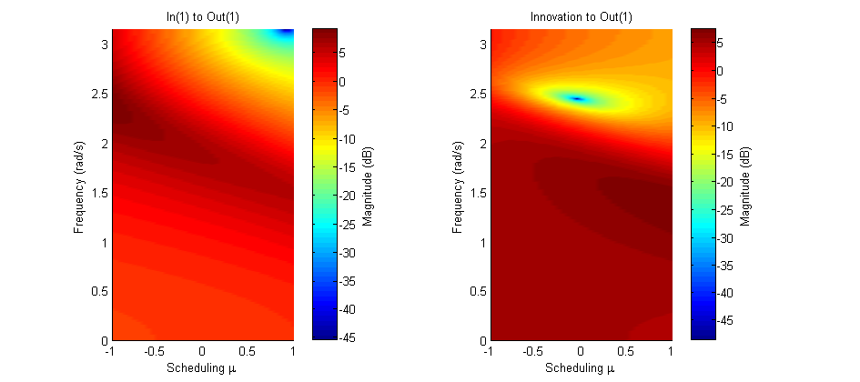

Contents
Example 24: Stabilizing the predictor
Using the LPV system of example 19, we demonstate a feature of lx2abcdk: this function can stabilze the predictor form of the identified model in a convex polytope around the scheduling data used in the identification. It does this by solving a minimization problem with LMI constraints. Without this stabilization, the predictor form may get unstable. This usually occurs when we use short data sequences for identification, and low noise levels. Install YALMIP and an SDP solver such as SEDUMI to use this feature.
close all; clear; clc;
Flapping dynamics of a wind turbine
% System matrices A1 = [0 0.0734; -6.5229 -0.4997]; A2 = [-0.0021 0; -0.0138 0.5196]; A12 = [A1 A2]; B12 = [-0.7221 0; -9.6277 0]; C12 = [1 0 0 0]; D12 = [0 0]; n = size(A12,1); % The order of the system m = size(A12,2)/n; % The number of scheduling parameters r = size(B12,2)/m; % The number of inputs l = size(C12,1); % The number of outputs % make affine LPV system M = idafflpv(A12,B12,C12,D12,eye(2),zeros(2,1),1);
LPV Bode diagram
The PBSID toolbox Version 0.5 and higher includes a function bodemag for LPV models in the idafflpv object, displaying the varying Bode magnitude plots of the system.
h = bodemag(M,(-1:0.05:1)',0:0.01:pi,'colors'); set(h,'units','normalized','outerposition',[0.1 0.25 0.75 0.5])
Open-loop identification experiment
Simulation of the model in open loop, to obtain the data used in the identification experiment:
% defining a number of constants j = 5; % period np = 10; % number of periods N = np*j; % number of data points % measured data from the scheduling parameters mu3 = cos(2*pi*(1:N)'./j); % simulation of the system with noise t = (0:N-1)'; u = randn(N,r); e = 0.01.*randn(N,l); y0 = sim(M,u,t,mu3); y = sim(M,u,t,mu3,e); disp('Signal to noise ratio (SNR) (open-loop)') snr(y,y0)
Signal to noise ratio (SNR) (open-loop) ans = 38.2814
Identification of the model in open loop
We generate system matrices A,B,C,D,K with lxabcdk. In Mkstable, the observer gain K is chosen such that the predictor form is stable.
% parameters p = 5; % past window size f = 3; % future window size % LPV identification with noise mu1 = ones(N,1); mu = [mu1 mu3]; [S,x] = lordvarx(u,y,mu,f,p,'tikh','gcv',[0 1 0]); x = lmodx(x,n); [A,B,C,D,K] = lx2abcdk(x,u,y,mu,f,p,[0 1 0]); Mk = idafflpv(A,B,C,D,K,zeros(2,1),1); % Generating a predictor form that is guaranteed to be stable in a convex % polytope around the scheduling data [As,Bs,Cs,Ds,Ks] = lx2abcdk(x,u,y,mu,f,p,[0 1 0],0,1); Mkstable = idafflpv(As,Bs,Cs,Ds,Ks,zeros(2,1),1);
Verification results
Simulation of identified LPV system:
yidk = sim(Mk,u,t,mu3,e);
disp('VAF of identified LPV system ')
vaf(y,yidk)
VAF of identified LPV system ans = 99.4545
Simulation of identified LPV system in the predictor form. If the predictor form is not stable we get bad results.
x0 = findstates(Mk,u,y,t,mu3,'CD'); yidpk = predict(Mk,u,y,t,mu3,x0,'CD'); disp('VAF of predictions of identified LPV system (not guaranteed to be stable)') vaf(y,yidpk) x0 = findstates(Mkstable,u,y,t,mu3,'CD'); yidpk = predict(Mkstable,u,y,t,mu3,x0,'CD'); disp('VAF of predictions of stabilized predictor') vaf(y,yidpk)
VAF of predictions of identified LPV system (not guaranteed to be stable)
ans =
0
VAF of predictions of stabilized predictor
ans =
99.6510
Stability analysis of the predictor form.
The function predstab returns the spectral radius at the cornerpoints of the convex polytope around the scheduling, and tau, the factor by which we can enlarge the scheduling range so that the predictor is still stable.
For non-stabilized predictor:
tau = predstab(Mk,min(mu3),max(mu3),'CD',1,1)
cornerpoint: mu = -0.81 spectral radius A-KC: 2.1 2.1 cornerpoint: mu = 1 spectral radius A-KC: 2 2 cornerpoint: mu = -0.81 spectral radius A-KC: 2.1 2.1 cornerpoint: mu = 1 spectral radius A-KC: 2 2 Unable to stabilize for very small tau tau = 7.4506e-009
For stabilized predictor:
tau = predstab(Mkstable,min(mu3),max(mu3),'CD',1,1)
cornerpoint: mu = -0.81
spectral radius A-KC: 0.31 0.59
cornerpoint: mu = 1
spectral radius A-KC: 0.47 0.47
cornerpoint: mu = -0.81
spectral radius A-KC: 0.31 0.59
cornerpoint: mu = 1
spectral radius A-KC: 0.47 0.47
tau =
1